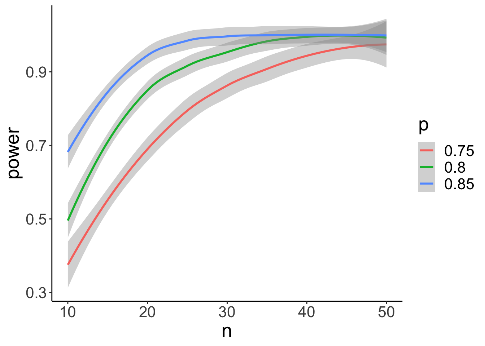
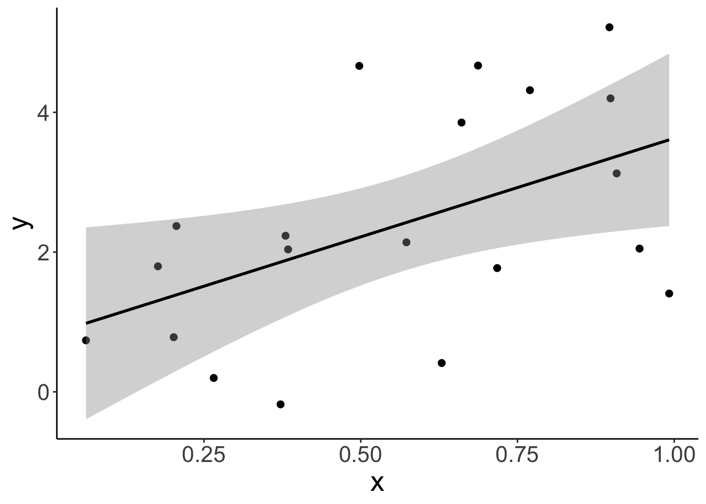

Chapter 16 Model comparison
16.1 Learning goals
- Model comparison.
- Underfitting vs. overfitting.
- Cross-validation.
- Leave-one-out cross-validation.
- k-fold cross-validation.
- Monte Carlo cross-validation.
- Information criteria: AIC and BIC.
16.2 Load packages and set plotting theme
library("knitr") # for knitting RMarkdown
library("kableExtra") # for making nice tables
library("janitor") # for cleaning column names
library("broom") # for tidying up linear models
library("pwr") # for power analysis
library("cowplot") # for figure panels
library("modelr") # for cross-validation
library("tidyverse") # for wrangling, plotting, etc.
opts_chunk$set(
comment = "",
results = "hold",
fig.show = "hold"
)16.3 Determining sample size
16.3.1 pwr package
Let’s figure out how many participants we would need to get a power of \(1-\beta = 0.8\) for testing an alternative hypothesis \(H_1\) according to which a coin is biased to come up heads with \(p = 0.75\) against a null hypothesis \(H_0\) according to which the coin is far \(p = 0.5\). Let’s set our desired alpha level to \(\alpha = .05\) and considered a one-tailed test. I’ll use the "pwr" library to do determine the sample size.
proportion power calculation for binomial distribution (arcsine transformation)
h = 0.5235988
n = 22.55126
sig.level = 0.05
power = 0.8
alternative = greaterI first calculated the effect size using the ES.h() function providing the two proportions as arguments. Take a look at the help file for ES.h() to figure see how it’s calculated. In short, the effect treats differences in proportions that are close to 0.5 different from ones that are close to the endpoints of the scale (i.e. 0 or 1). Intuitively, it’s more impressive to change a probability from 0.9 to 1 than it would be to change a probability from 0.5 to 0.6. The effect size captures this. We find that to reach a power of 0.8 at a \(\alpha = .05\) assuming a one-tailed test, we would need to run \(n = 23\) participants.
The "pwr" package also makes plots to illustrate how power changes with sample size:
pwr.p.test(h = ES.h(p1 = 0.75, p2 = 0.50),
sig.level = 0.05,
power = 0.80,
alternative = "greater") %>%
plot() +
theme(title = element_text(size = 16))
16.3.2 map()
The family of map() functions comes with the "purrr" package which is loaded as part of the tidyverse. It’s a powerful function that allows us to avoid writing for-loops. Using the map() function makes otherwise complex procedures much simpler, allows for code that’s easier to read, and that’s much faster to run.
Her are some examples of how map() works:
# using the formula notation with ~
map(.x = 1:3, .f = ~ .x^2)
# the same computation using an anonymous function
map(.x = 1:3, .f = function(.x) .x^2)
# outputs a vector
map_dbl(.x = 1:3, .f = ~ .x^2)
# using a function
square = function(x){x^2}
map_dbl(1:3, square)
# with multiple arguments
map2_dbl(.x = 1:3, .y = 1:3, .f = ~ .x * .y)I encourage you to take a look at the purrr cheatsheet, as well as skimming the datacamp courses on functional programming (see Additional Resources below). Mastering map() is a key step to becoming an R power user :)
16.3.3 via simulation
16.3.3.1 simple example
Let’s start with a simple example. We want to determine what power we have to correctly reject the \(H_0\) according to which the coin is fair, for \(H_1: p = 0.75\) with \(\alpha = 0.05\) (one-tailed) and a sample size of \(n = 10\).
Let’s see:
# make example reproducible
set.seed(1)
# parameters
p1 = 0.5
p2 = 0.75
alpha = 0.05
n_simulations = 100
n = 10
# set up the simulation grid
df.pwr = crossing(sample_size = n,
n_simulations = 1:n_simulations,
p1 = p1,
p2 = p2,
alpha = alpha)
# draw random samples from the binomial distribution
df.pwr = df.pwr %>%
mutate(n_heads = rbinom(n = n(),
size = sample_size,
prob = p2))
# apply binomial test for each simulation and extract p-value
df.pwr = df.pwr %>%
group_by(n_simulations) %>%
nest() %>%
mutate(binom_test = map(data, ~ binom.test(x = .$n_heads,
n = .$sample_size,
p = 0.5,
alternative = "greater")),
p_value = map(binom_test, ~ .$p.value))
# calculate the proportion with which the H0 would be rejected (= power)
df.pwr %>%
summarize(power = sum(p_value < .05) /n())# A tibble: 100 x 2
n_simulations power
<int> <dbl>
1 1 0
2 2 0
3 3 0
4 4 0
5 5 1
6 6 0
7 7 0
8 8 0
9 9 0
10 10 1
# … with 90 more rowsSo, the results of this example show, that with \(n = 10\) participants, we only have a power of .18 to reject the null hypothesis \(H_0: p = 0.5\) when the alternative hypothesis \(H_1: p = 0.75\) is true. Not an experiment we should run …
16.3.3.2 more advanced example
This more advanced example, which we discussed in class, calculates power for a different sample sizes (from \(n = 10\) to \(n = 50\)), and for different alternative hypotheses \(H_1: p = 0.75\), \(H_1: p = 0.8\), and \(H_1: p = 0.85\). I then figure out for what n we would get a power of 0.8 assuming \(H_1: p = 0.75\). Otherwise, the procedure is identical to the simple example above.
# make reproducible
set.seed(1)
# number of simulations
n_simulations = 200
# run simulation
df.power = crossing(n = seq(10, 50, 1),
simulation = 1:n_simulations,
p = c(0.75, 0.8, 0.85)) %>%
mutate(index = 1:n()) %>% # add an index column
mutate(response = rbinom(n = n(), size = n, prob = p)) %>% # generate random data
group_by(index, simulation, p) %>%
nest() %>% # put data in list column
mutate(fit = map(data,
~ binom.test(x = .$response, # define formula
n = .$n,
p = 0.5,
alternative = "greater")),
p.value = map_dbl(fit, ~ .$p.value)) %>% # run binomial test and extract p-value
unnest(data) %>%
select(-fit)Let’s visualze the relationship between power and sample size for the three alternative hypotheses:
# data frame for plot
df.plot = df.power %>%
group_by(n, p) %>%
summarize(power = sum(p.value < 0.05) / n()) %>%
ungroup() %>%
mutate(p = as.factor(p))
# plot data
ggplot(data = df.plot,
mapping = aes(x = n, y = power, color = p, group = p)) +
geom_smooth(method = "loess")
# find optimal n based on simulations
df.plot %>%
filter(p == 0.75, near(power, 0.8, tol = 0.01))# A tibble: 1 x 3
n p power
<dbl> <fct> <dbl>
1 27 0.75 0.795
Let’s compare with the solution that the pwr package gives.
# analytic solution
pwr.p.test(h = ES.h(p1 = 0.75, p2 = 0.5),
power = 0.8,
sig.level = 0.05,
alternative = "greater")
proportion power calculation for binomial distribution (arcsine transformation)
h = 0.5235988
n = 22.55126
sig.level = 0.05
power = 0.8
alternative = greaterPretty close! To get more accuracy in our simulation, we would simply need to increase the number of simulated statistical tests we perform to calculate power.
16.4 Model comparison
In general, we want our models to explain the data we observed, and correctly predict future data. Often, there is a trade-off between how well the model fits the data we have (e.g. how much of the variance it explains), and how well the model will predict future data. If our model is too complex, then it will not only capture the systematicity in the data but also fit to the noise in the data. If our mdoel is too simple, however, it will not capture some of the systematicity that’s actually present in the data. The goal, as always in statistical modeling, is to find a model that finds the sweet spot between simplicity and complexity.
16.4.1 Fitting vs. predicting
Let’s illustrate the trad-off between complexity and simplicty for fitting vs. prediction. We generate data from a model of the following form:
\[ Y_i = \beta_0 + \beta_1 \cdot X_i + \beta_2 + X_i^2 + \epsilon_i \] where
\[ \epsilon_i \sim \mathcal{N}(\text{mean} = 0, ~\text{sd} = 20) \] Here, I’ll use the following parameters: \(\beta_0 = 10\), \(\beta_1 = 3\), and \(\beta_2 = 2\) to generate the data:
set.seed(1)
n_plots = 3
n_samples = 20 # sample size
n_parameters = c(1:4, seq(7, 19, length.out = 5)) # number of parameters in the polynomial regression
# generate data
df.data = tibble(
x = runif(n_samples, min = 0, max = 10),
y = 10 + 3 * x + 3 * x^2 + rnorm(n_samples, sd = 20)
)
# plotting function
plot_fit = function(i){
# calculate RMSE
rmse = lm(formula = y ~ poly(x, degree = i, raw = TRUE),
data = df.data) %>%
augment() %>%
summarize(rmse = .resid^2 %>%
mean() %>%
sqrt() %>%
round(2))
# make a plot
ggplot(data = df.data,
mapping = aes(x = x,
y = y)) +
geom_point(size = 2) +
geom_smooth(method = "lm", se = F,
formula = y ~ poly(x, degree = i, raw = TRUE)) +
annotate(geom = "text",
x = Inf,
y = -Inf,
label = str_c("RMSE = ", rmse),
hjust = 1.1,
vjust = -0.3) +
theme(axis.ticks = element_blank(),
axis.title = element_blank(),
axis.text = element_blank())
}
# save plots in a list
l.p = map(n_parameters, plot_fit)
# make figure panel
plot_grid(plotlist = l.p, ncol = 3)Warning in predict.lm(model, newdata = new_data_frame(list(x = xseq)),
se.fit = se, : prediction from a rank-deficient fit may be misleading
Warning in predict.lm(model, newdata = new_data_frame(list(x = xseq)),
se.fit = se, : prediction from a rank-deficient fit may be misleading
Warning in predict.lm(model, newdata = new_data_frame(list(x = xseq)),
se.fit = se, : prediction from a rank-deficient fit may be misleading
As we can see, RMSE becomes smaller and smaller the more parameters the model has to fit the data. But how does the RMSE look like for new data that is generated from the same underlying ground truth?
set.seed(1)
n_plots = 3
n_samples = 20 # sample size
n_parameters = c(1:4, seq(7, 19, length.out = 5)) # number of parameters in the polynomial regression
# generate data
df.data = tibble(
x = runif(n_samples, min = 0, max = 10),
y = 10 + 3 * x + 3 * x^2 + rnorm(n_samples, sd = 20)
)
# generate some more data
df.more_data = tibble(
x = runif(50, min = 0, max = 10),
y = 10 + 3 * x + 3 * x^2 + rnorm(50, sd = 20)
)
# list for plots
l.p = list()
# plotting function
plot_fit = function(i){
# calculate RMSE for fitted data
fit = lm(formula = y ~ poly(x, degree = i, raw = TRUE),
data = df.data)
rmse = fit %>%
augment() %>%
summarize(rmse = .resid^2 %>%
mean() %>%
sqrt() %>%
round(2))
# calculate RMSE for new data
rmse_new = fit %>%
augment(newdata = df.more_data) %>%
summarize(rmse = (y - .fitted)^2 %>%
mean() %>%
sqrt() %>%
round(2))
# make a plot
ggplot(data = df.data,
mapping = aes(x = x,
y = y)) +
geom_point(size = 2) +
geom_point(data = df.more_data,
size = 2,
color = "red") +
geom_smooth(method = "lm", se = F,
formula = y ~ poly(x, degree = i, raw = TRUE)) +
annotate(geom = "text",
x = Inf,
y = -Inf,
label = str_c("RMSE = ", rmse),
hjust = 1.1,
vjust = -0.3) +
annotate(geom = "text",
x = Inf,
y = -Inf,
label = str_c("RMSE = ", rmse_new),
hjust = 1.1,
vjust = -2,
color = "red") +
theme(axis.ticks = element_blank(),
axis.title = element_blank(),
axis.text = element_blank())
}
# map over the parameters
l.p = map(n_parameters, plot_fit)
# make figure panel
plot_grid(plotlist = l.p, ncol = 3)Warning in predict.lm(model, newdata = new_data_frame(list(x = xseq)),
se.fit = se, : prediction from a rank-deficient fit may be misleading
Warning in predict.lm(model, newdata = new_data_frame(list(x = xseq)),
se.fit = se, : prediction from a rank-deficient fit may be misleading
Warning in predict.lm(model, newdata = new_data_frame(list(x = xseq)),
se.fit = se, : prediction from a rank-deficient fit may be misleading
The RMSE in black shows the root mean squared error for the data that the model was fit on. The RMSE in red shows the RMSE on the new data. As you can see, the complex models do really poorly. They overfit the noise in the original data which leads to make poor predictions for new data. The simplest model (with two parameters) doesn’t do particularly well either since it misses out on the quadratic trend in the data. Both the model with the quadratic term (top middle) and a model that includes a cubic term (top right) provide a good balance – their RMSE on the new data is lowest.
Let’s generate another data set:
# make example reproducible
set.seed(1)
# parameters
sample_size = 100
b0 = 1
b1 = 2
b2 = 3
sd = 0.5
# sample
df.data = tibble(
participant = 1:sample_size,
x = runif(sample_size, min = 0, max = 1),
y = b0 + b1*x + b2*x^2 + rnorm(sample_size, sd = sd)
) And plot it:
ggplot(data = df.data,
mapping = aes(x = x,
y = y)) +
geom_smooth(method = "lm",
formula = y ~ x + I(x^2)) +
geom_point()
16.4.2 F-test
Let’s fit three models of increasing complexity to the data. The model which fits the way in which the data were generated has the following form:
\[ \widehat Y_i = b_0 + b_1 \cdot X_i + b_2 \cdot X_i^2 \]
# fit models to the data
fit_simple = lm(y ~ 1 + x, data = df.data)
fit_correct = lm(y ~ 1 + x + I(x^2), data = df.data)
fit_complex = lm(y ~ 1 + x + I(x^2) + I(x^3), data = df.data)
# compare the models using an F-test
anova(fit_simple, fit_correct)
anova(fit_correct, fit_complex)Analysis of Variance Table
Model 1: y ~ 1 + x
Model 2: y ~ 1 + x + I(x^2)
Res.Df RSS Df Sum of Sq F Pr(>F)
1 98 25.297
2 97 21.693 1 3.6039 16.115 0.0001175 ***
---
Signif. codes: 0 '***' 0.001 '**' 0.01 '*' 0.05 '.' 0.1 ' ' 1
Analysis of Variance Table
Model 1: y ~ 1 + x + I(x^2)
Model 2: y ~ 1 + x + I(x^2) + I(x^3)
Res.Df RSS Df Sum of Sq F Pr(>F)
1 97 21.693
2 96 21.643 1 0.050399 0.2236 0.6374The F-test tells us that fit_correct explains significantly more variance than fit_simple, whereas fit_complex doesn’t explain significantly more variance than fit_correct.
But, as discussed in class, there are many situations in which we cannot use the F-test to compare models. Namely, whenever we want to compare unnested models where one models does not include all the predictors of the other model. But, we can still use cross-validation in this case.
Let’s take a look.
16.4.3 Cross-validation
Cross-validation is a powerful technique for finding the sweet spot between simplicity and complexity. Moreover, we can use cross-validation to compare models that we cannot compare using the F-test approach that we’ve been using up until now.
There are many different kinds of cross-validation. All have the same idea in common though:
- we first fit the model to a subset of the data, often called training data
- and then check how well the model captures the held-out data, often called test data
Different versions of cross-validation differ in how the training and test data sets are defined. We’ll look at three different cross-validation techniques:
- Leave-on-out cross-validation
- k-fold cross-validation
- Monte Carlo cross-validation
16.4.3.1 Leave-one-out cross-validation
I’ve used code similar to this one to illustrate how LOO works in class. Here is a simple data set with 9 data points. We fit 9 models, where for each model, the training set includes one of the data points, and then we look at how well the model captures the held-out data point. We can then characterize the model’s performance by calculating the mean squared error across the 9 runs.
# make example reproducible
set.seed(1)
# sample
df.loo = tibble(
x = 1:9,
y = c(5, 2, 4, 10, 3, 4, 10, 2, 8)
)
df.loo_cross = df.loo %>%
crossv_loo() %>%
mutate(fit = map(train, ~ lm(y ~ x, data = .)),
tidy = map(fit, tidy)) %>%
unnest(tidy)
# original plot
df.plot = df.loo %>%
mutate(color = 1)
# fit to all data except one
fun.cv_plot = function(data_point){
# determine which point to leave out
df.plot$color[data_point] = 2
# fit
df.fit = df.plot %>%
filter(color != 2) %>%
lm(y ~ x, data = .) %>%
augment(newdata = df.plot[df.plot$color == 2,]) %>%
clean_names()
p = ggplot(df.plot,
aes(x, y, color = as.factor(color))) +
geom_segment(aes(xend = x,
yend = fitted),
data = df.fit,
color = "red",
size = 1) +
geom_point(size = 2) +
geom_smooth(method = "lm", se = F, color = "black", fullrange = T,
data = df.plot %>% filter(color != 2)) +
scale_color_manual(values = c("black", "red")) +
theme(legend.position = "none",
axis.title = element_blank(),
axis.ticks = element_blank(),
axis.text = element_blank())
return(p)
}
# save plots in list
l.plots = map(1:9, fun.cv_plot)
# make figure panel
plot_grid(plotlist = l.plots, ncol = 3)
As you can see, the regression line changes quite a bit depending on which data point is in the test set.
Now, let’s use LOO to evaluate the models on the data set I’ve created above:
# fit the models and calculate the RMSE for each model on the test set
df.cross = df.data %>%
crossv_loo() %>% # function which generates training and test data sets
mutate(model_simple = map(train, ~ lm(y ~ 1 + x, data = .)),
model_correct = map(train, ~ lm(y ~ 1 + x + I(x^2), data = .)),
model_complex = map(train, ~ lm(y ~ 1 + x + I(x^2) + I(x^3), data = .))) %>%
gather("model", "fit", contains("model")) %>%
mutate(rmse = map2_dbl(fit, test, rmse))
# show the average RMSE for each model
df.cross %>%
group_by(model) %>%
summarize(mean_rmse = mean(rmse) %>% round(3))# A tibble: 3 x 2
model mean_rmse
<chr> <dbl>
1 model_complex 0.382
2 model_correct 0.378
3 model_simple 0.401As we can see, the model_correct has the lowest average RMSE on the test data.
One downside with LOO is that it becomes unfeasible when the number of data points is very large, as the number of cross validation runs equals the number of data points. The next cross-validation procedures help in this case.
16.4.3.2 k-fold cross-validation
For k-fold cross-validation, we split the data set in k folds, and then use k-1 folds as the training set, and the remaining fold as the test set.
The code is almost identical as before. Instead of crossv_loo(), we use the crossv_kfold() function instead and say how many times we want to “fold” the data.
# crossvalidation scheme
df.cross = df.data %>%
crossv_kfold(k = 10) %>%
mutate(model_simple = map(train, ~ lm(y ~ 1 + x, data = .)),
model_correct = map(train, ~ lm(y ~ 1 + x + I(x^2), data = .)),
model_complex = map(train, ~ lm(y ~ 1 + x + I(x^2) + I(x^3), data = .))) %>%
gather("model", "fit", contains("model")) %>%
mutate(rsquare = map2_dbl(fit, test, rsquare))
df.cross %>%
group_by(model) %>%
summarize(median_rsquare = median(rsquare))# A tibble: 3 x 2
model median_rsquare
<chr> <dbl>
1 model_complex 0.884
2 model_correct 0.889
3 model_simple 0.880Note, for this example, I’ve calculated \(R^2\) (the variance explained by each model) instead of RMSE – just to show you that you can do this, too. Often it’s useful to do both: show how well the model correlates, but also show the error.
16.4.3.3 Monte Carlo cross-validation
Finally, let’s consider another very flexible version of cross-validation. For this version of cross-validation, we determine how many random splits into training set and test set we would like to do, and what proportion of the data should be in the test set.
# crossvalidation scheme
df.cross = df.data %>%
crossv_mc(n = 50, test = 0.5) %>% # number of samples, and percentage of test
mutate(model_simple = map(train, ~ lm(y ~ 1 + x, data = .x)),
model_correct = map(train, ~ lm(y ~ 1 + x + I(x^2), data = .x)),
model_complex = map(train, ~ lm(y ~ 1 + x + I(x^2) + I(x^3), data = .))) %>%
gather("model", "fit", contains("model")) %>%
mutate(rmse = map2_dbl(fit, test, rmse))
df.cross %>%
group_by(model) %>%
summarize(mean_rmse = mean(rmse))# A tibble: 3 x 2
model mean_rmse
<chr> <dbl>
1 model_complex 0.492
2 model_correct 0.484
3 model_simple 0.515In this example, I’ve asked for \(n = 50\) splits and for each split, half of the data was in the training set, and half of the data in the test set.
16.4.4 Bootstrap
We can also use the modelr package for bootstrapping. The idea is the same as when we did cross-validation. We create a number of data sets from our original data set. Instead of splitting the data set in a training and test data set, for bootstrapping, we sample values from the original data set with replacement. Doing so, we can, for example, calculate the confidence interval of different statistics of interest.
Here is an example for how to boostrap confidence intervals for a mean.
# make example reproducible
set.seed(1)
sample_size = 10
# sample
df.data = tibble(
participant = 1:sample_size,
x = runif(sample_size, min = 0, max = 1)
)
# mean of the actual sample
mean(df.data$x)
# bootstrap to get confidence intervals around the mean
df.data %>%
bootstrap(n = 1000) %>% # create 1000 boostrapped samples
mutate(estimate = map_dbl(strap, ~ mean(.$data$x[.$idx]))) %>% # get the sample mean
summarize(mean = mean(estimate),
low = quantile(estimate, 0.025), # calculate the 2.5 / 97.5 percentiles
high = quantile(estimate, 0.975))[1] 0.5515139
# A tibble: 1 x 3
mean low high
<dbl> <dbl> <dbl>
1 0.556 0.378 0.732Note the somewhat weird construction ~ mean(.$data$x[.$idx])). This is just because the bootstrap function stores the information about each boostrapped data set in that way. Each boostrapped sample simply points to the original data set, and then uses a different set of indices idx to indicate which values from the original data set it sampled (with replacement).
16.4.5 AIC and BIC
The Akaike Information Criterion (AIC) and the Bayesian Information Criterion (BIC) are defined as follows:
\[ \text{AIC} = 2k-2\ln(\hat L) \]
\[ \text{BIC} = \ln(n)k-2\ln(\hat L) \]
where \(k\) is the number of parameters in the model, \(n\) is the number of observations, and \(\hat L\) is the maximized value of the likelihood function of the model. Both AIC and BIC trade off model fit (as measured by the maximum likelihood of the data \(\hat L\)) and the number of parameters in the model.
Calculating AIC and BIC in R is straightforward. We simply need to fit a linear model, and then call the AIC() or BIC() functions on the fitted model like so:
set.seed(0)
# let's generate some data
df.example = tibble(
x = runif(20, min = 0, max = 1),
y = 1 + 3 * x + rnorm(20, sd = 2)
)
# fit a linear model
fit = lm(formula = y ~ 1 + x,
data = df.example)
# get AIC
AIC(fit)
# get BIC
BIC(fit)[1] 75.47296
[1] 78.46016We can also just use the broom package to get that information:
# A tibble: 1 x 11
r.squared adj.r.squared sigma statistic p.value df logLik AIC BIC
<dbl> <dbl> <dbl> <dbl> <dbl> <int> <dbl> <dbl> <dbl>
1 0.255 0.214 1.45 6.16 0.0232 2 -34.7 75.5 78.5
# … with 2 more variables: deviance <dbl>, df.residual <int>Both AIC and BIC take the number of parameters and the model’s likelihood into account. BIC additionally considers the number of observations. But how is the likelihood of a linear model determined?
Let’s visualize the data first:
# plot the data with a linear model fit
ggplot(df.example,
aes(x, y)) +
geom_point(size = 2) +
geom_smooth(method = "lm", color = "black")
Now, let’s take a look at the residuals by plotting the fitted values on the x axis, and the residuals on the y axis.
# residual plot
df.plot = df.example %>%
lm(y ~ x, data = .) %>%
augment() %>%
clean_names()
ggplot(df.plot,
aes(fitted, resid)) +
geom_point(size = 2)
Remember that the linear model makes the assumption that the residuals are normally distributed with mean 0 (which is always the case if we fit a linear model) and some fitted standard deviation. In fact, the standard deviation of the normal distribution is fitted such that the overall likelihood of the data is maximized.
Let’s make a plot that shows a normal distribution alongside the residuals:
# define a normal distribution
df.normal = tibble(
y = seq(-5, 5, 0.1),
x = dnorm(y, sd = 2) + 3.9
)
# show the residual plot together with the normal distribution
df.plot %>%
ggplot(aes(x = fitted, y = resid)) +
geom_point() +
geom_path(data = df.normal,
aes(x = x, y = y),
size = 2)
To determine the likelihood of the data given the model \(\hat L\), we now calculate the likelihood of each point (with the dnorm() function), and then multiply the likelihood of each data point to get the overall likelihood. We can simply multiply the data points since we also assume that the data points are independent.
Instead of multiplying likelihoods, we often sum the log likelihoods instead. This is because if we multiply many small values, the overall value gets to close to 0 so that computers get confused. By taking logs instead, we avoid these nasty precision errors.
To better understand AIC and BIC, let’s calculate them by hand:
# we first get the estimate of the standard deviation of the residuals
sigma = fit %>%
glance() %>%
pull(sigma)
# then we calculate the log likelihood of the model
log_likelihood = fit %>%
augment() %>%
mutate(likelihood = dnorm(.resid, sd = sigma)) %>%
summarize(logLik = sum(log(likelihood))) %>%
as.numeric()
# then we calculate AIC and BIC using the formulas introduced above
aic = 2*3 - 2 * log_likelihood
bic = log(nrow(df.example)) * 3 - 2 * log_likelihood
print(aic)
print(bic)[1] 75.58017
[1] 78.56737Cool! The values are the same as when we use the glance() function like so (except for a small difference due to rounding):
# A tibble: 1 x 2
AIC BIC
<dbl> <dbl>
1 75.5 78.5
16.5 Additional resources
16.5.1 Cheatsheet
- purrr
- cross-validation for model selection: cross-validation in multi-level designs
16.5.2 Datacamp course
16.5.3 Reading
16.5.4 Misc
- G*Power 3.1: Software for power calculations
- caret: General framework for modeling data in R.
16.6 Session info
R version 3.6.1 (2019-07-05)
Platform: x86_64-apple-darwin15.6.0 (64-bit)
Running under: macOS Mojave 10.14.6
Matrix products: default
BLAS: /Library/Frameworks/R.framework/Versions/3.6/Resources/lib/libRblas.0.dylib
LAPACK: /Library/Frameworks/R.framework/Versions/3.6/Resources/lib/libRlapack.dylib
locale:
[1] en_US.UTF-8/en_US.UTF-8/en_US.UTF-8/C/en_US.UTF-8/en_US.UTF-8
attached base packages:
[1] stats graphics grDevices utils datasets methods base
other attached packages:
[1] forcats_0.4.0 stringr_1.4.0 dplyr_0.8.3 purrr_0.3.2
[5] readr_1.3.1 tidyr_1.0.0 tibble_2.1.3 ggplot2_3.2.1
[9] tidyverse_1.2.1 modelr_0.1.5 cowplot_1.0.0 pwr_1.2-2
[13] broom_0.5.2 janitor_1.2.0 kableExtra_1.1.0 knitr_1.25
loaded via a namespace (and not attached):
[1] tidyselect_0.2.5 xfun_0.9 haven_2.1.1
[4] lattice_0.20-38 snakecase_0.11.0 colorspace_1.4-1
[7] vctrs_0.2.0 generics_0.0.2 htmltools_0.3.6
[10] viridisLite_0.3.0 yaml_2.2.0 utf8_1.1.4
[13] rlang_0.4.1 pillar_1.4.2 withr_2.1.2
[16] glue_1.3.1 readxl_1.3.1 lifecycle_0.1.0
[19] cellranger_1.1.0 munsell_0.5.0 gtable_0.3.0
[22] rvest_0.3.4 evaluate_0.14 labeling_0.3
[25] fansi_0.4.0 Rcpp_1.0.3 scales_1.0.0
[28] backports_1.1.5 jsonlite_1.6 webshot_0.5.1
[31] hms_0.5.1 digest_0.6.22 stringi_1.4.3
[34] bookdown_0.13 grid_3.6.1 cli_1.1.0
[37] tools_3.6.1 magrittr_1.5 lazyeval_0.2.2
[40] crayon_1.3.4 pkgconfig_2.0.3 zeallot_0.1.0
[43] ellipsis_0.3.0 xml2_1.2.2 lubridate_1.7.4
[46] assertthat_0.2.1 rmarkdown_1.15 httr_1.4.1
[49] rstudioapi_0.10 R6_2.4.1 nlme_3.1-141
[52] compiler_3.6.1